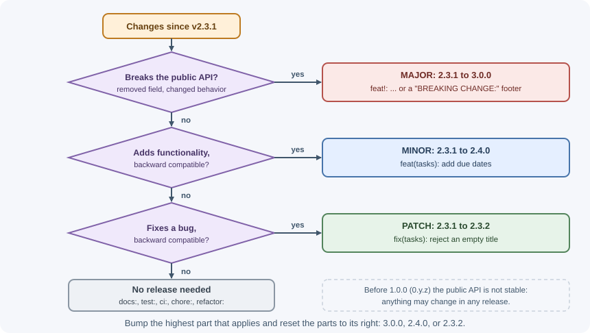

Versioning, Tags, and Releases¶
A release is a named, immutable snapshot of your software that someone can install, deploy, or roll back to. Versioning gives each release a name that communicates what changed; Git tags pin that name to an exact commit; and release tooling turns commits into changelogs, version bumps, and published artifacts.
This lesson covers Semantic Versioning (including pre-release and build metadata), lightweight, annotated, and signed tags, Conventional Commits, changelog generation, release automation with release-please and semantic-release, GitHub Releases and release assets, calendar versioning, and how to stamp the version into the artifacts you deploy.
Why it matters¶
Versions are a contract with the people and systems that depend on you. A library that ships a breaking change as a patch release breaks every consumer whose lockfile allowed it; an API team that cannot say which commit is running in production cannot reproduce a bug or roll back confidently. Automated, consistent versioning removes the "what is in this release?" meeting, produces accurate changelogs for free, and links every running artifact back to a tag, a commit, and the pull requests that went into it.
Real-world usage¶
- Semantic Versioning. The
SemVer 2.0.0 specification defines
MAJOR.MINOR.PATCH, pre-release and build metadata, and precedence rules.
npm's dependency ranges (
^1.4.0,~1.4.0) assume packages follow it, which is why a mislabelled breaking change spreads so quickly through the JavaScript ecosystem. - Conventional Commits. The
Conventional Commits 1.0.0
specification maps commit types to SemVer:
fixto a patch,featto a minor release, and!or aBREAKING CHANGEfooter to a major release, so tools can compute the next version from history. - release-please at Google. Google's release-please is used across its open-source client libraries. It maintains a standing "Release PR" with the version bump and changelog, and creates the tag and GitHub Release when that PR is merged.
- Calendar versioning. CalVer documents
date-based schemes used by well-known projects; Ubuntu's
YY.0Mreleases (for example 24.04, April 2024) are the classic example.
Popular tools and providers: release-please, semantic-release,
Changesets (popular in JavaScript monorepos), commitlint, npm version,
GitHub Releases and the gh release CLI, and docker/metadata-action for
deriving image tags from Git tags.
How it works¶
Semantic Versioning¶
A semantic version is MAJOR.MINOR.PATCH, for example 2.4.1:
| Part | Increment when | Example |
|---|---|---|
| MAJOR | You make an incompatible change to the public API | 2.4.1 to 3.0.0 |
| MINOR | You add functionality in a backward-compatible way | 2.4.1 to 2.5.0 |
| PATCH | You make backward-compatible bug fixes | 2.4.1 to 2.4.2 |
Incrementing a part resets the parts to its right to zero. Rules worth knowing precisely:
- A released version's contents must never change. Fixing a release means publishing a new version.
0.y.zis for initial development: anything may change at any time, and the public API is not considered stable.1.0.0defines the public API.- The public API must be declared: for TaskFlow API it is the HTTP endpoints, request and response shapes, and status codes clients rely on; for a library it is the exported functions and types.
v2.4.1is a common tag name, but thevis not part of the semantic version itself.

Pre-release versions append a hyphen and dot-separated identifiers:
3.0.0-alpha.1, 3.0.0-beta.2, 3.0.0-rc.1. A pre-release has lower
precedence than the normal version, and identifiers compare part by
part, numerically when numeric:
1.0.0-alpha < 1.0.0-alpha.1 < 1.0.0-alpha.beta < 1.0.0-beta
< 1.0.0-beta.2 < 1.0.0-beta.11 < 1.0.0-rc.1 < 1.0.0
Note beta.2 < beta.11 (numeric comparison), a classic bug in hand-rolled
version sorting.
Build metadata appends a plus sign: 2.4.1+build.517 or
2.4.1+sha.1a2b3c4. It is ignored when comparing precedence, so two
versions differing only in build metadata are the same version.
How consumers use SemVer in npm (see npm and package management):
| Range | Matches | Meaning |
|---|---|---|
^2.4.1 |
>=2.4.1 <3.0.0 |
Any compatible minor or patch |
~2.4.1 |
>=2.4.1 <2.5.0 |
Patches only |
^0.4.1 |
>=0.4.1 <0.5.0 |
For 0.x, the caret treats the minor as breaking |
2.4.1 |
exactly 2.4.1 | Pinned |
Git tags¶
A tag is a ref under refs/tags/ that names a commit permanently. There
are three kinds:
| Kind | Command | Stores | Use for |
|---|---|---|---|
| Lightweight | git tag v2.4.0 |
Just a ref to the commit | Private bookmarks |
| Annotated | git tag -a v2.4.0 -m "TaskFlow API 2.4.0" |
A tag object: tagger, date, message | Releases |
| Signed | git tag -s v2.4.0 -m "..." |
An annotated tag plus a GPG, SSH, or X.509 signature | Releases where provenance matters |
Annotated tags are objects with their own metadata (see
Git fundamentals), and several tools
treat them specially: git describe uses only annotated tags unless you
pass --tags, and git push --follow-tags pushes only annotated tags
reachable from the pushed commits.
Tags are not pushed by default:
git push origin v2.4.0 # push one tag
git push --follow-tags # push commits plus their annotated tags
git ls-remote --tags origin # list tags on the remote
Treat release tags as immutable. Moving a published tag (git tag -f
plus a force push) means two people can build "v2.4.0" from different
code, and caches, package registries, and lockfiles that recorded the old
commit will disagree. If a release is bad, publish v2.4.1.
git describe names any commit relative to the nearest tag, which is
useful for development builds:
git describe --tags --dirty
# v2.4.0-5-g1a2b3c4 5 commits after v2.4.0, at commit 1a2b3c4
# v2.4.0-5-g1a2b3c4-dirty ...with uncommitted changes
Conventional Commits¶
Conventional Commits is a lightweight convention for commit messages:
<type>[optional scope][!]: <description>
[optional body]
[optional footer(s)]
feat(tasks): add dueDate to tasks
fix(auth): reject expired refresh tokens
perf(db): add index on tasks.ownerId
docs: document the pagination parameters
feat(api)!: return 404 instead of 200 with null for missing tasks
BREAKING CHANGE: clients that checked for a null body must handle 404.
| Type | Meaning | Default effect on version |
|---|---|---|
feat |
A new feature | MINOR |
fix |
A bug fix | PATCH |
! after type/scope, or a BREAKING CHANGE: footer |
Incompatible change | MAJOR |
perf, refactor, docs, test, build, ci, chore, style |
Other changes (types beyond feat and fix are allowed by the spec) |
None by default; tools can be configured |
With squash merging, the PR title becomes the commit message on
main, so teams lint PR titles rather than every commit on the branch.
Commit message linting with commitlint is covered in
hooks, .gitignore, and large repositories.
Changelogs and release notes¶
A changelog is a human-readable list of notable changes per version. Generated from Conventional Commits, it groups entries by type:
## [2.4.0] (2026-11-13) <- tools link this heading to the v2.3.1...v2.4.0 compare view
### Features
* **tasks:** add dueDate to tasks (#212)
### Bug Fixes
* **auth:** reject expired refresh tokens (#215)
GitHub can also generate release notes from merged pull requests, grouped
by label, configured in .github/release.yml:
# .github/release.yml
changelog:
exclude:
labels: [skip-changelog]
categories:
- title: Breaking changes
labels: [breaking-change]
- title: New features
labels: [enhancement]
- title: Bug fixes
labels: [bug]
- title: Other changes
labels: ["*"]
Release automation¶
Two widely used tools compute the next version from Conventional Commits.
![Diagram: with release-please, commits such as feat and fix land on main, release-please runs on every push to main and updates a standing Release PR that bumps package.json to 2.4.0 and adds CHANGELOG.md entries; a person merges the Release PR when ready; release-please creates tag v2.4.0 and a GitHub Release, and a release workflow builds once, pushes the image, and attaches assets; with semantic-release, CI runs on the push, semantic-release analyzes commits since the last tag, computes 2.4.0, and in the same run creates the tag, the GitHub Release, and publishes to the registry with no pull request.](../release-automation-flow.svg)
| release-please | semantic-release | |
|---|---|---|
| Release trigger | Merging the Release PR | Any push to a release branch with releasable commits |
| Human checkpoint | Yes: the Release PR is reviewed and merged | No, unless you add one |
| Writes to the repo | Version files and CHANGELOG.md via the PR |
Nothing by default (version lives in tags and the registry) |
| Typical fit | Applications and services, multi-package repos with a manifest | Libraries published on every merge |
| Monorepos | Built-in manifest mode, one version per package | Via community plugins |
release-please watches the default branch. On each push it creates or
updates a Release PR containing the version bump (for example in
package.json with release-type: node) and the new changelog section.
When you merge that PR, it tags the merge commit, creates a GitHub
Release, and exposes outputs such as release_created, tag_name, and
version for later jobs.
semantic-release runs in CI after tests pass. It reads commits since
the last release tag, decides the bump, generates notes, creates the tag
and GitHub Release, and publishes (for example to npm) in one run. It
needs the full Git history and tags, so the checkout must use
fetch-depth: 0.
Changesets takes a different approach popular in JavaScript monorepos: contributors add small "changeset" files describing the bump for each package, and a release PR aggregates them.
A practical detail for both: GitHub does not start new workflow runs for
events created with the default GITHUB_TOKEN (to prevent loops). A
Release PR opened with GITHUB_TOKEN will not trigger your CI checks, and
a tag pushed with it will not trigger an on: push: tags workflow. Use a
GitHub App token or a fine-grained token for the release bot, or run the
publish steps in the same workflow, as in the example below.
GitHub Releases and release assets¶
A GitHub Release is attached to a tag and adds a title, notes, and downloadable assets (binaries, archives, checksums, SBOMs). Each release can hold up to 1,000 assets, each under 2 GiB. Releases can be drafts (not public yet) or marked as pre-releases, and one release is marked "latest".
With immutable releases enabled for a repository (generally available since October 2025), a published release's tag and assets cannot be changed or deleted, and GitHub generates an attestation for the release. Create the release as a draft, attach every asset, then publish.
Container images and packages usually go to a registry (GHCR, npm, Docker Hub) rather than release assets; the release notes link to them by version and digest.
Calendar versioning¶
CalVer uses dates instead of compatibility signals: 24.04 (YY.0M),
2026.11.1 (YYYY.MM.MICRO). It suits products whose users care about
"how recent" rather than "is it compatible": operating systems,
applications on a release train, internal services. It does not tell
consumers whether an upgrade is safe, so libraries should prefer SemVer.
| Scheme | Says | Good for |
|---|---|---|
| SemVer | Compatibility | Libraries, SDKs, public APIs |
| CalVer | Age, release cadence | OS releases, apps on time-based trains |
| Build number or commit SHA | Exact build | Internal services deployed continuously |
Many continuously deployed services do not version releases for humans at all: every deployment is identified by its commit SHA and image digest. That is fine, as long as each artifact is traceable.
The version inside the artifact¶
Whatever scheme you use, stamp it into the artifact so a running system can tell you what it is:
- Container image tags and labels: tag
2.4.0,2.4, and the commit SHA, and add the OCI labelsorg.opencontainers.image.versionandorg.opencontainers.image.revision. - An endpoint or log line:
GET /versionreturning the version and commit, and the same values in the startup log and in error tracking "release" fields. - Binaries and bundles: embed at build time (environment variables or generated files), never computed at runtime from a Git checkout that production does not have.
Never rebuild a release under the same version: build once, then promote that exact artifact (see artifacts and environment promotion).
When to use and when not to use¶
| Situation | Recommended approach |
|---|---|
| Public library or SDK | SemVer, Conventional Commits, semantic-release or release-please, signed tags |
| Service with external API consumers | SemVer for the API contract (or API versions in the URL), release-please for human-gated releases |
| Internal service deployed many times a day | Commit SHA and image digest per deploy; optional CalVer or SemVer tags for milestones |
| Mobile or desktop app | SemVer or CalVer marketing version plus an always-increasing build number required by the stores |
| Monorepo with several packages | release-please manifest mode or Changesets, one version per package |
| Prototype or pre-1.0 product | 0.y.z; do not promise stability you cannot keep |
Avoid Conventional Commits automation when your team will not keep the discipline: wrong commit types produce wrong versions. In that case, lint the PR title and squash-merge, so only one message per change matters.
Practical examples¶
Tag and verify a release by hand¶
git switch main && git pull --ff-only
npm version minor -m "chore(release): %s" # bumps package.json, commits, tags v2.4.0
git push --follow-tags # push the commit and the annotated tag
# Signed tag with an SSH key (Git 2.34+)
git config --global gpg.format ssh
git config --global user.signingkey ~/.ssh/id_ed25519.pub
git tag -s v2.4.1 -m "TaskFlow API 2.4.1"
git tag -v v2.4.1 # verification needs gpg.ssh.allowedSignersFile
git push origin v2.4.1
npm version creates an annotated tag by default when run in a Git
repository, using the v prefix.
release-please for TaskFlow API¶
# .github/workflows/release.yml
name: release
on:
push:
branches: [main]
permissions:
contents: read
jobs:
release-please:
runs-on: ubuntu-latest
permissions:
contents: write # create tags and releases
pull-requests: write # open and update the Release PR
issues: write # manage release labels
outputs:
release_created: ${{ steps.rp.outputs.release_created }}
tag_name: ${{ steps.rp.outputs.tag_name }}
version: ${{ steps.rp.outputs.version }}
steps:
- id: rp
uses: googleapis/release-please-action@v5
with:
release-type: node
# A GitHub App or fine-grained token, so CI runs on the Release PR
token: ${{ secrets.RELEASE_BOT_TOKEN }}
publish-image:
needs: release-please
if: needs.release-please.outputs.release_created == 'true'
runs-on: ubuntu-latest
permissions:
contents: read
packages: write # push to ghcr.io
steps:
- uses: actions/checkout@v7
with:
ref: ${{ needs.release-please.outputs.tag_name }}
- uses: docker/setup-buildx-action@v4
- uses: docker/login-action@v4
with:
registry: ghcr.io
username: ${{ github.actor }}
password: ${{ secrets.GITHUB_TOKEN }}
- uses: docker/build-push-action@v7
with:
context: .
push: true
build-args: |
VERSION=${{ needs.release-please.outputs.version }}
GIT_SHA=${{ github.sha }}
tags: |
ghcr.io/example/taskflow-api:${{ needs.release-please.outputs.version }}
ghcr.io/example/taskflow-api:sha-${{ github.sha }}
The publish job runs in the same workflow as release-please, so it does not depend on a tag push event triggering another workflow. In practice teams often promote an image already built for that commit instead of building again; see artifacts and environment promotion.
semantic-release for a shared npm package¶
{
"branches": ["main", { "name": "next", "prerelease": true }],
"plugins": [
"@semantic-release/commit-analyzer",
"@semantic-release/release-notes-generator",
"@semantic-release/npm",
"@semantic-release/github"
]
}
# .github/workflows/release.yml (taskflow-sdk package)
name: release
on:
push:
branches: [main, next]
permissions:
contents: read
jobs:
release:
runs-on: ubuntu-latest
permissions:
contents: write # tags and GitHub Releases
issues: write # comment on released issues
pull-requests: write # comment on released PRs
id-token: write # npm trusted publishing and provenance
steps:
- uses: actions/checkout@v7
with:
fetch-depth: 0 # full history and tags are required
- uses: actions/setup-node@v7
with:
node-version: 24
- run: npm ci
- run: npm test
- run: npm audit signatures
- run: npx semantic-release
env:
GITHUB_TOKEN: ${{ secrets.GITHUB_TOKEN }}
The first file is .releaserc.json. The next branch publishes
pre-releases such as 3.0.0-next.1. With npm trusted publishing
configured for the package, no npm token secret is needed: the job's
OIDC identity (id-token: write) authorizes the publish, and npm records
provenance. OIDC is explained in
pipeline and supply chain security.
Create a GitHub Release with assets from the CLI¶
npm run build:openapi # writes dist/openapi.json
sha256sum dist/openapi.json > dist/SHA256SUMS
gh release create v2.4.0 dist/openapi.json dist/SHA256SUMS \
--title "TaskFlow API 2.4.0" \
--generate-notes \
--verify-tag # fail if the tag does not exist on GitHub
Expose the version from the running service¶
# Dockerfile (excerpt)
FROM node:24-slim
ARG VERSION=dev
ARG GIT_SHA=unknown
LABEL org.opencontainers.image.version=$VERSION \
org.opencontainers.image.revision=$GIT_SHA
ENV APP_VERSION=$VERSION \
GIT_SHA=$GIT_SHA
// src/routes/version.js
import { Router } from "express";
export const versionRouter = Router();
versionRouter.get("/version", (req, res) => {
res.json({
version: process.env.APP_VERSION ?? "dev",
commit: process.env.GIT_SHA ?? "unknown",
});
});
curl https://api.example.com/version now answers "what is running?"
during an incident, and the image labels answer the same question for
whoever inspects the registry.
Best practices¶
- Follow SemVer for anything other teams consume, and define what your public API is.
- Use annotated (ideally signed) tags for releases, and never move or reuse a published tag.
- Adopt Conventional Commits for PR titles and squash merge, and lint them in CI.
- Automate version bumps, changelogs, tags, and release notes; humans decide when, tools decide what number.
- Build each release once and publish it under one version; record the commit SHA and image digest with it.
- Stamp version and commit into every artifact and expose them at runtime.
- Enable immutable releases where your platform supports them, and attach checksums (and SBOMs) to release assets.
- Use pre-release channels (
-rc.1,nextbranch) to test major versions with early adopters.
In production¶
- Consumers break after a "minor" upgrade.
Detect: bug reports appear right after a minor or patch release; the
diff removed or renamed a public field. Cause: a breaking change
shipped without
!or aBREAKING CHANGEfooter. Fix: publish a patch that restores compatibility (or deprecate first), then add contract tests for the public API and lint PR titles. - Two builds of "v2.4.0" behave differently. Detect: image digests or checksums for the same version differ. Cause: a tag was moved, or the release was rebuilt from a branch. Fix: treat tags as immutable (protect them with a tag ruleset), publish a new patch version, and promote artifacts by digest.
- The release workflow never runs after release-please creates a
tag.
Detect: the tag and GitHub Release exist, but no
on: push: tagsoron: releaserun appears. Cause: the tag was created withGITHUB_TOKEN, which does not trigger new workflow runs. Fix: run the publish job in the same workflow gated onrelease_created, or use a GitHub App token for the release bot. - semantic-release decides "no release" or the wrong version in CI.
Detect: logs say no previous tag was found, and it tries to release
1.0.0. Cause: a shallow checkout without tags. Fix:
fetch-depth: 0onactions/checkout. - Nobody can say which version is running in production.
Detect: incident responders compare deploy timestamps with merge
times by hand. Cause: no version or commit in the artifact or
telemetry. Fix: stamp version and SHA at build, expose
/version, and tag logs, metrics, and error reports with the release. - Pre-release versions sort wrongly in a dashboard.
Detect:
1.0.0-beta.11appears before1.0.0-beta.2. Cause: string sorting instead of SemVer precedence. Fix: use a SemVer library (for example thesemvernpm package) for comparisons.
Important terminology¶
- Semantic Versioning (SemVer): MAJOR.MINOR.PATCH versions that signal compatibility.
- Public API: The documented surface whose compatibility the version number promises.
- Pre-release: A version with a hyphenated suffix (
-rc.1) that sorts before its normal version. - Build metadata: A
+suffix ignored for precedence. - Lightweight tag: A ref pointing directly at a commit.
- Annotated tag: A tag object with tagger, date, and message.
- Signed tag: An annotated tag carrying a cryptographic signature.
- Conventional Commits: A commit message convention that encodes change type and breaking changes.
- Changelog: A curated, per-version list of notable changes.
- Release PR: A pull request maintained by release-please that, when merged, triggers a release.
- Release asset: A file attached to a GitHub Release.
- Immutable release: A release whose tag and assets cannot change after publication.
- CalVer: Versioning based on release dates.
Common mistakes and misconceptions¶
- Thinking the version number is marketing. For dependencies it is a compatibility promise that tools act on automatically.
- Releasing breaking changes as minor versions because "it is a small break".
- Moving tags to "fix" a release.
- Using lightweight tags for releases, so
git describeand--follow-tagsignore them. - Rebuilding the same version for each environment.
- Assuming
GITHUB_TOKEN-created tags and PRs trigger other workflows. - Sorting versions as strings.
- Staying on
0.xforever to avoid committing to compatibility.
Revision questions¶
- What does each part of
MAJOR.MINOR.PATCHpromise, and what resets when you bump one? - Order these versions:
1.0.0,1.0.0-rc.1,1.0.0-beta.11,1.0.0-beta.2,1.0.0-alpha. - The last release is
3.7.2. Since then: twofixcommits, onefeat(tasks)commit, and onedocscommit. What is the next version? What if one of the fixes wasfix(api)!:? (3.8.0; 4.0.0.) - What is the difference between lightweight, annotated, and signed tags, and which should a release use?
- How do release-please and semantic-release differ in when a release happens?
- Why might a release workflow triggered by tag pushes never run, and how do you fix it?
- When is CalVer a better choice than SemVer?
- Give three ways to make a running service report its exact version and commit.